光渦照射による磁気スキルミオン生成
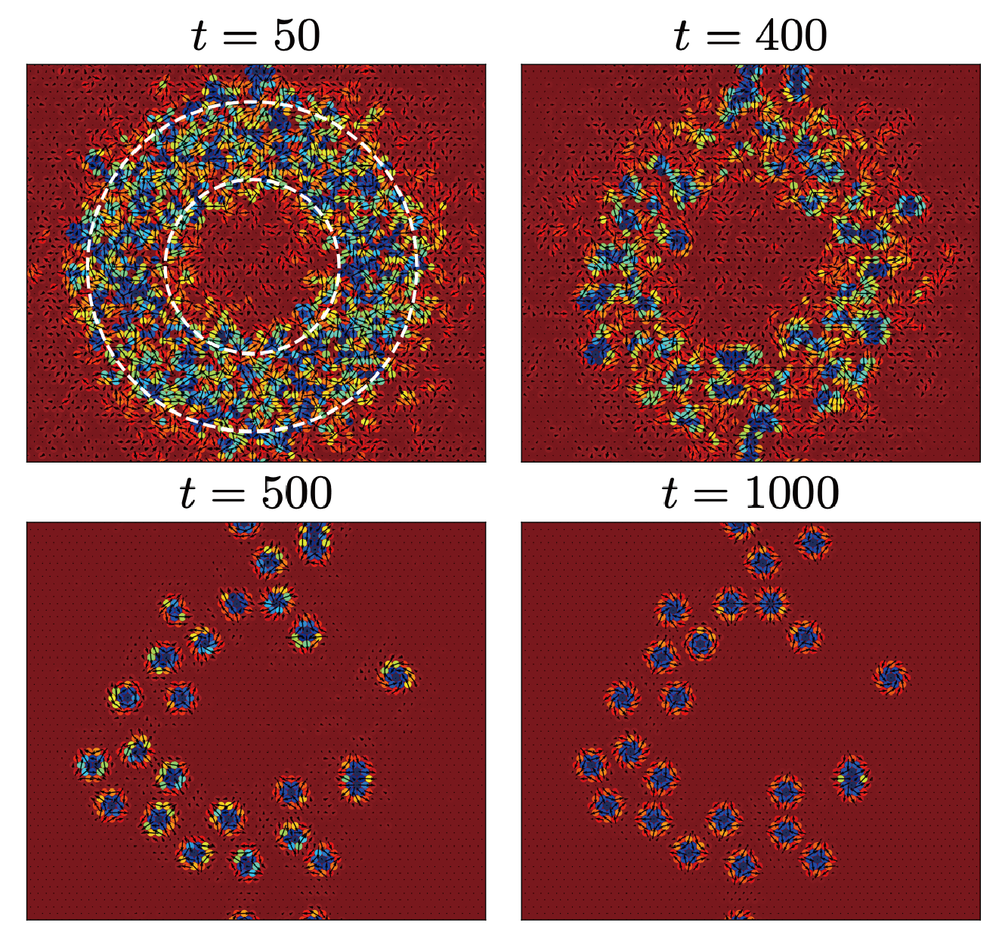
近年、スキルミオンと呼ばれる渦状の磁気構造が、トポロジカルな性質を持つ新しい磁性状態として注目を集めています。 スキルミオンは高密度・低消費電力な情報記録技術への応用が期待されており、その生成・制御手法の開発が活発に進められています。 従来、スキルミオンは結晶の空間反転対称性がない磁性体に対して研究されてきましたが、近年では空間反転対称性を有するフラストレート磁性体においてもスキルミオンが形成されることが明らかとなっています。 しかし、この新しいタイプのスキルミオン系に対して、渦状のレーザー光を用いてスキルミオンを生成・制御する方法はこれまでほとんど検討されていませんでした。
本研究では、フラストレート磁性体にラゲール・ガウシアンビームと呼ばれる渦状レーザー光を照射した際の磁気ダイナミクスを理論的に解析しました。
その結果、レーザー照射による局所的な加熱効果を利用して、孤立したスキルミオンやスキルミオン結晶を効率的に生成できることを明らかにしました。
また、スピン軌道相互作用に由来する異方的な磁気相互作用を利用することで、生成されるスキルミオンの種類や内部構造を選択的に制御できることも示しました。
本研究は、光渦を用いてトポロジカル磁気構造を創成・制御するための理論的指針を与えるものであり、将来的なスキルミオンデバイスや光磁気制御技術への応用が期待されます。
R. J. Laxamana and S. Hayami, Phys. Rev. B 114, 014307 (2026)
対称性適合多極子基底に基づいた有効フォノン模型構築
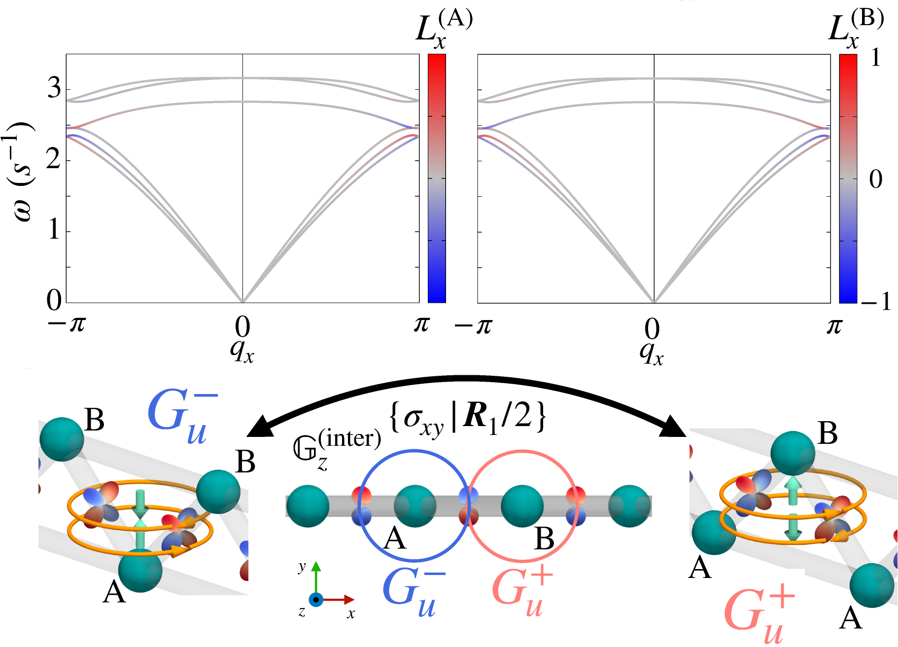
近年、フォノン（格子振動）が持つ角運動量は「カイラルフォノン」として注目を集めており、スピン流生成や光との相互作用など、新しい物性現象との関係が活発に研究されています。 一方、結晶の回転対称性の自発的な破れによって生じるフェロアキシャル秩序は、空間反転対称性を保ったまま特異な電子・光学応答を示すことが知られていますが、フォノンの性質に与える影響はほとんど明らかになっていませんでした。 また、複雑な格子振動を支配する力定数と結晶対称性との関係を統一的に理解するための理論的枠組みも十分には確立されていませんでした。
本研究では、対称性適応多極子基底を用いて格子振動の有効模型を構築する新しい理論手法を提案し、フォノンの角運動量を生み出すために必要なフォノン自由度をミクロな立場から明らかにしました。
理論手法をフェロアキシャル秩序に適用した結果、各副格子では有限のフォノン角運動量が現れる一方、結晶全体では互いに打ち消し合う「隠れたフォノン角運動量」をもつフォノンバンドが実現することを示しました。
さらに、極性による対称性の破れの影響を取り入れることでこの打ち消しが解消され、結晶全体として有限のカイラルフォノン分散が現れることを示しました。
本研究は、結晶対称性と格子振動との関係を統一的に理解する新たな設計指針を与えるとともに、電子秩序や外場を利用したフォノン機能の制御や新しいフォノニクス材料の開発につながることが期待されます。
Y. Xie, R. Oiwa, and S. Hayami, J. Phys. Soc. Jpn. 95, 083601 (2026)
周期駆動電磁場によるスキルミオン結晶生成
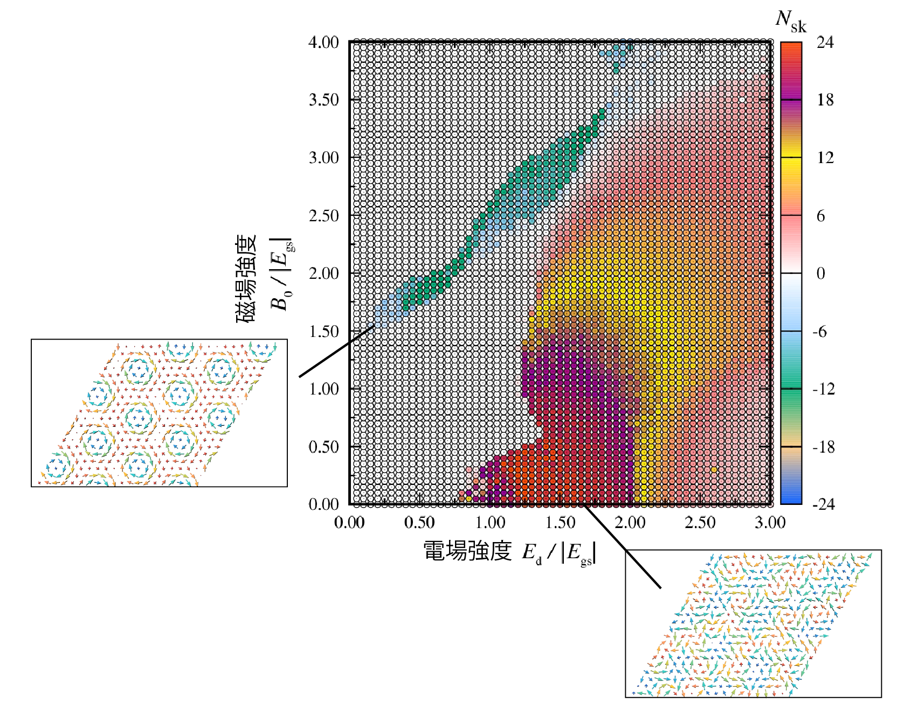
近年、スキルミオン結晶と呼ばれる渦状の磁気構造が、トポロジカルな性質を持つ新しい磁性状態として注目を集めています。 スキルミオン結晶は、情報を高密度かつ低消費電力で記録・制御できる可能性を秘めており、次世代スピントロニクス素子への応用が期待されています。 これまでスキルミオン結晶の生成には、静的な磁場や物質固有の相互作用を利用する方法が主流でしたが、近年では光や交流電場などの時間的に変化する外場を用いて磁気状態を動的に制御する「フロケ工学」が新たな研究分野として発展しています。 しかし、時間依存電磁場によってどのようなトポロジカル磁気状態が実現し、それらがどのような機構で安定化されるかについては十分に理解されていませんでした。
本研究では、空間反転対称性をもつフラストレート磁性体を対象として、時間依存電磁場照射によるスキルミオン結晶生成とそのトポロジカル相転移を理論的に調べました。
三角格子上の古典ハイゼンベルグ模型に対して、円偏光電磁場を印加し、ランダウ・リフシッツ・ギルバート方程式を数値的に解くことで非平衡定常状態を解析しました。
その結果、電場と磁場の組み合わせに応じて異なるトポロジカル数をもつ複数のスキルミオン結晶が生成されることを明らかにしました。
特に、円偏光電場のみではトポロジカル数が2の高次スキルミオン結晶が形成される一方、円偏光磁場や静磁場を加えることでトポロジカル数が1や−1のスキルミオン結晶へと相転移することを見出しました。
さらに、フロケ理論に基づく有効模型解析から、これらのスキルミオン結晶を安定化するための重要な相互作用を示しました。
本研究は、光や交流電場を用いてスキルミオン結晶を自在に作り出し制御するための理論的な道筋を示した成果です。
T. Shirato, R. Yambe, and S. Hayami, Phys. Rev. B 113, 214435 (2026)
多軌道系における多重Q磁気秩序相の安定性解析
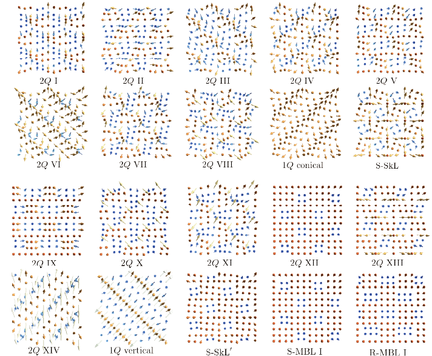
近年、複数のスピン密度波が重ね合わさる「多重Q磁気秩序」が、フラストレート磁性体や遍歴電子系における新奇磁気状態として注目を集めています。 特に、スキルミオンや非共面磁気構造を伴う秩序状態は、トポロジカルな性質を持つことから、次世代スピントロニクスへの応用が期待されています。 これまで、こうした多重Q磁気秩序状態は主に空間反転対称性の破れた系におけるジャロシンスキー・守谷相互作用によって安定化されると考えられてきました。 一方で近年、中心対称なフラストレート磁性体においても、競合する磁気相互作用や多軌道自由度によって多様な多重Q磁気秩序が安定化されることが明らかになり、新しい形成機構の理解が重要な課題となっています。
本研究では、多軌道4f電子系を対象として、結晶場効果と運動量空間におけるフラストレーション効果が多重Q磁気秩序の形成に与える影響を理論的に解析しました。
結晶場によって分裂した複数のクラマース二重項を取り入れた有効多軌道模型を構築し、自己無撞着平均場計算を用いて広いパラメータ領域における基底状態を調べました。
その結果、正方格子型スキルミオン結晶だけでなく、磁気バブル相や多様な二重Q磁気秩序相が安定化されることを明らかにしました。
特に、複数の等価な波数ベクトル間の競合によって生じる「運動量空間フラストレーション」が、高調波成分を低エネルギーで励起し、多重Q状態の安定化に本質的な役割を果たしていることを示しました。
本研究は、多軌道自由度とフラストレーションが協力して生み出す複雑な磁気秩序の形成機構を明らかにするとともに、中心対称磁性体における新奇トポロジカル磁気構造探索への理論的指針を与える成果です。
Y. S. Zha and S. Hayami, Phys. Rev. B 113, 174415 (2026)
フェロアキシャル物質K2Zr(PO4)2に対する電気トロイダル多極子による定量化
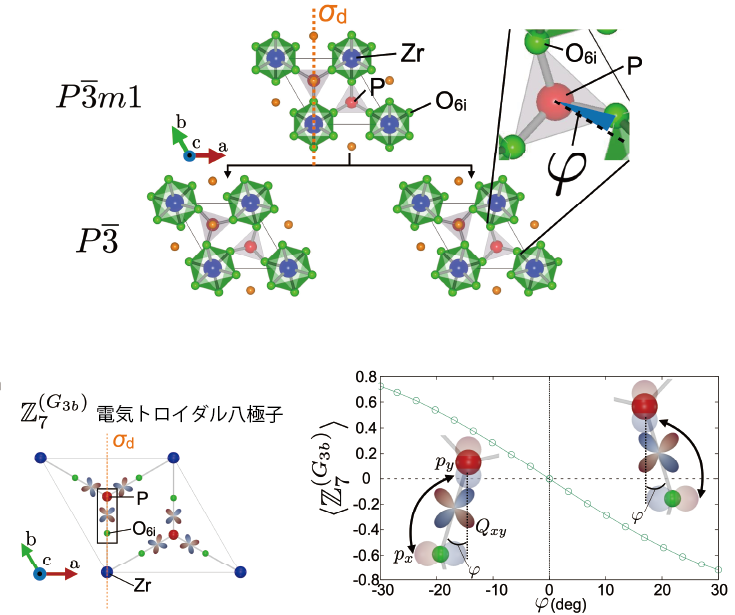
近年、結晶の「回転の向き」に対応する新しい秩序として、「強軸性（フェロアキシャリティ）」と呼ばれる概念が注目を集めています。 強軸性は、結晶全体がねじれるような構造変形に対応する秩序であり、通常の強磁性や強誘電性とは異なる対称性を持っています。 このような強軸性秩序は、非線形光学応答やスピン流生成など、特徴的な物性現象を引き起こすことが知られています。 しかし、実際の物質において、どのようなミクロな電子自由度が強軸性秩序を担っているのかについては、これまで十分に理解されていませんでした。
本研究では、強軸性物質として知られるK2Zr(PO4)2を対象に、第一原理計算と対称性適合ワニエ模型解析を組み合わせることで、強軸性秩序の微視的起源を理論的に解析しました。
その結果、リン原子と酸素原子の p 軌道間、およびジルコニウム原子の d 軌道と酸素原子の p 軌道間に生じる軌道混成が、電気トロイダル八極子などの特殊な多極子自由度を通じて、強軸性の形成に本質的な役割を果たしていることを明らかにしました。
特に、これらの効果がスピン軌道相互作用ではなく、スピンを伴わない純粋な軌道混成によって生じているという点を指摘しました。
さらに、結晶構造の回転角に応じて対応する多極子の大きさも増大することを示し、電気トロイダル多極子自由度が強軸性の秩序変数として機能していることを明らかにしました。
本研究は、強軸性物質における電子状態の起源を定量的に明らかにするとともに、多極子理論が複雑な結晶物性を理解するための有効な手法であることを示した成果です。
Y. Xie, R. Oiwa, and S. Hayami, Phys. Rev. B 113, 205133 (2026)
マグノン-フォノン結合系における非相反フォノン励起
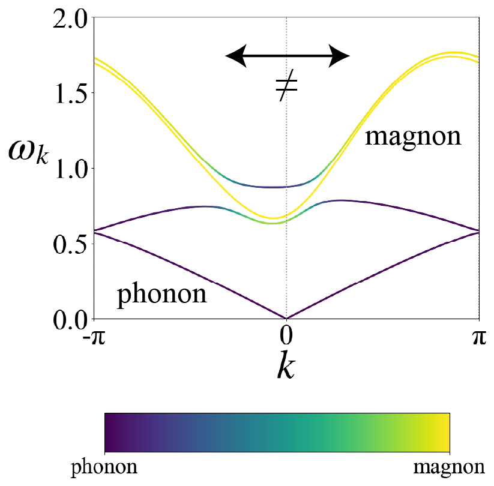
近年、磁石の中で電子スピンが作る波のような運動（マグノン）と、原子の振動（フォノン）が強く結びついた「マグノン–フォノン混成状態」が注目を集めています。 特に、ある方向には伝わりやすいが逆方向には伝わりにくい「非相反性」を持つ励起は、熱や情報を一方向に制御できる可能性があるため、次世代のスピントロニクスやフォノニクスへの応用が期待されています。 一方で、通常のフォノン系では、格子振動に進行方向の違いを生み出す相互作用が存在しないため、フォノンがどのようにして非相反性を獲得するのかはよく分かっていませんでした。
本研究では、ジグザグ格子やハニカム格子といった構造を持ち、空間反転対称性が破れた反強磁性体を対象として、マグノンとフォノンが混成した状態を理論的に解析しました。
その結果、空間反転対称性の破れに伴って現れるマグノンの非相反性が、マグノン–フォノン相互作用を介してフォノンにも転写され、フォノン自身も進行方向に依存した振る舞いを示すことを明らかにしました。
さらに、この非相反性の大きさがマグノン–フォノン結合の強さによって制御できることも示しました。
本研究は、熱や振動を一方向に制御する新しい物質機能の理解と設計に向けた指針を与える成果です。
S. Sukawa and S. Hayami, Eur. Phys. J. B 99, 60 (2026)
スカラーカイラリティゼロの二重Q磁気秩序が創発する巨大ホール効果
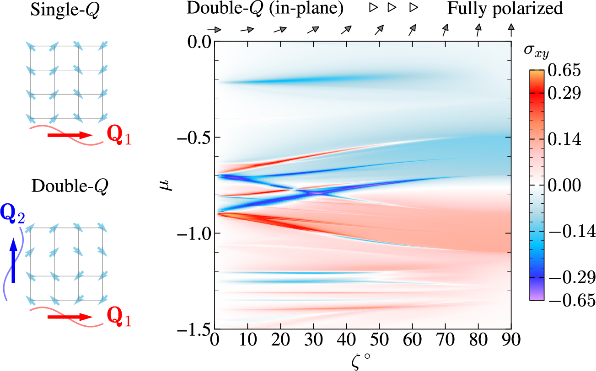
近年、複数のスピン密度波が重ね合わさる「多重Q磁性体」が注目を集めています。 特に、スキルミオンのようなトポロジカルなスピン構造では、スカラーカイラリティと呼ばれる量によりトポロジカルホール効果が生じることが知られています。 一方で、こうしたトポロジカルな特徴を持たない磁気構造においても、大きなホール応答が観測される例が報告されており、その起源はよく理解されていませんでした。
本研究では、スカラーカイラリティが空間平均としてゼロとなる「二重Q磁気秩序」に着目し、そのような一見トポロジカルに自明なスピン構造においても巨大な異常ホール効果が生じる新しい機構を理論的に明らかにしました。
多軌道近藤格子模型に基づく解析により、二重Q磁気構造に特有のスピン干渉効果が軌道間の混成を誘起し、その結果として運動量空間におけるベリー曲率が大きく増強されることを示しました。
さらに、異常ホール伝導度が磁化に対して単調に変化する強磁性体の振る舞いとは異なり、二重Q磁気秩序状態では非単調な応答を示すことを明らかにしました。
このような振る舞いは、実際のスキルミオン物質GdRu2Si2やGdRu2Ge2における実験結果とも整合的であり、本研究の理論がこれらの物質における異常ホール効果の理解に重要な手がかりを与えることを示しています。
S. Ohgata and S. Hayami, Phys. Rev. B 113, L180401 (2026)
多極子表現論に基づく磁気八極子流の対称性分類
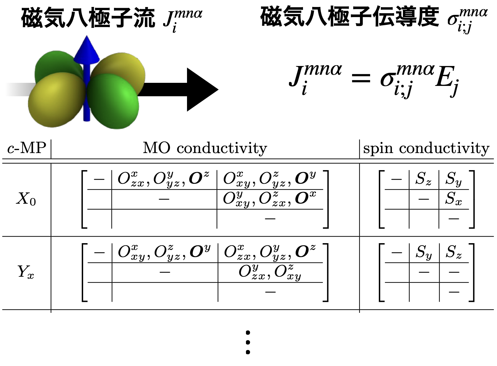
近年、「d波交替磁性体」と呼ばれる新しいタイプの磁性体が注目を集めています。 これは、見た目は反強磁性体に近いにもかかわらず、電子の振る舞いに強磁性体のような特徴も現れるという、従来とは異なる性質を持つ磁性体です。 こうした磁性体において、磁化の向きを表す「ネールベクトル」を電気的に制御することができれば、新しいスピントロニクスデバイスへの応用が期待されます。 その鍵となるのが「磁気八極子」と呼ばれる量で、これはネールベクトルと強く結びつき、ピエゾ磁気効果などの特異な現象を理解する上で重要な役割を果たします。 さらに最近では、「磁気八極子トルク」と呼ばれる新しい力の働きが提案されており、従来のスピン軌道トルクとは異なり、スピン軌道相互作用を使わずにネールベクトルを動かせる可能性が示されています。
この磁気八極子トルクを実現するためには、「磁気八極子流」と呼ばれる流れを電場によって作り出し、それを物質内部に注入することが重要になります。
しかし、この磁気八極子流がどのような条件で生じるのか、どのような性質を持つのかについては、これまで十分に理解されていませんでした。
そこで本研究では、物質の対称性を扱う群論や多極子表現理論と、電場に対する応答を計算する線形応答理論を組み合わせることで、この問題に取り組みました。
その結果、磁気八極子流の大きさや向きを決める「伝導度テンソル」が、電子の持つさまざまな多極子（電気的・磁気的な分布の特徴）とどのように関係しているかを明らかにしました。
本研究は、これまで複雑で理解が難しかった磁気八極子流の仕組みを、「対称性」と「多極子」という観点から整理して理解できる枠組みを提供するものです。
Y. Takasu and S. Hayami, Phys. Rev. B 113, 155138 (2026)
有限温度におけるスキルミオンの安定化機構解析
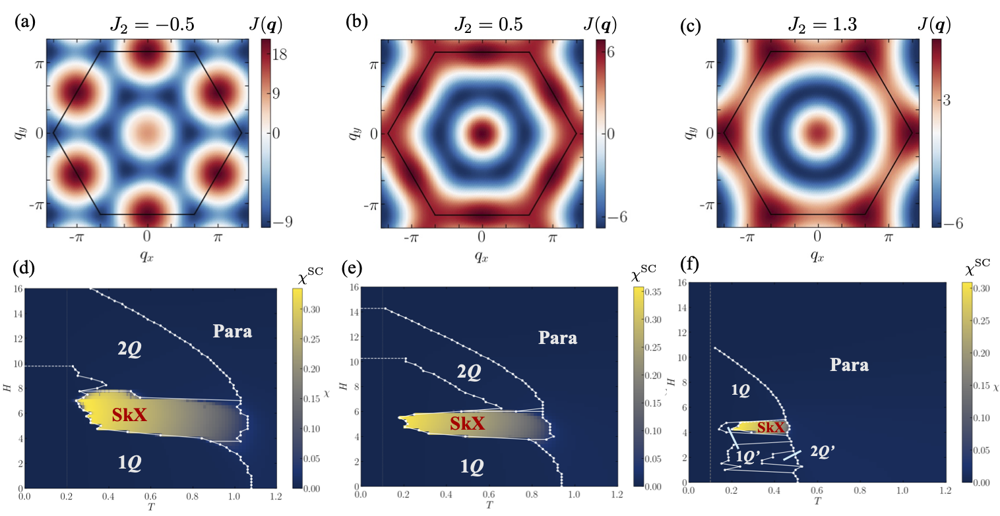
近年、スキルミオンに代表されるトポロジカル磁気構造は、その特異な物性と次世代スピントロニクスデバイスへの応用可能性から大きな注目を集めています。 これまで、スキルミオン結晶の安定化機構としては、空間反転対称性の破れた物質におけるジャロシンスキー・守谷相互作用や、 中心対称な系における交換相互作用のフラストレーションなどが主要な要因として議論されてきました。 特にフラストレート磁性体では、複数の磁気秩序ベクトルが重ね合わさることでスキルミオン結晶が実現することが知られています。 しかしながら、これらの研究の多くは基底状態に焦点を当てたものであり、実際の物質において重要となる有限温度での安定化機構については十分に理解されていませんでした。
そこで本研究では、空間反転対称なフラストレート磁性体におけるスキルミオン結晶の有限温度安定性に着目し、
三角格子上のハイゼンベルク模型を対象に理論的解析を行いました。
特に、交換相互作用を波数空間で表した際のエネルギー構造を詳細に調べることで、スキルミオン結晶の安定性を決定づける重要な要因を探索しました。
その結果、スキルミオン結晶の有限温度での安定化には、波数空間における6回回転対称性に由来する異方性および強磁性チャンネルに相当する相互作用が重要な役割を果たすことを明らかにしました。
本研究の結果は、スキルミオン結晶の有限温度安定性を支配する微視的要因を波数空間の観点から体系的に理解する枠組みを提供するものであり、さらなるトポロジカル磁気構造の探索や設計に広く応用できると期待されます。
K. Okigami and S. Hayami, J. Phys. Soc. Jpn. 95, 044702 (2026)
4体スピン相互作用を用いたトポロジカル磁性生成
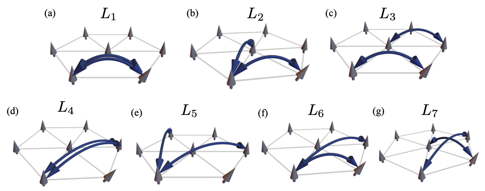
近年、スキルミオン結晶をはじめとするトポロジカル磁気構造の安定化機構として、四体相互作用などの高次スピン相互作用が重要な役割を果たすことが明らかになり、大きな注目を集めています。 従来、スキルミオン結晶の安定化はジャロシンスキー・守谷相互作用や磁気フラストレーションなどの二体相互作用を基盤として議論されてきましたが、 近年の理論研究や第一原理計算により、電子相関に由来する多体相互作用が実在物質において無視できない寄与をもつことが示されています。 その一方で、これら高次相互作用は実空間での結合形式が複雑であるため、目的とするトポロジカル磁気秩序を系統的に設計する理論的枠組みは十分に確立されていませんでした。
本研究では、4体スピン相互作用の役割に着目し、実空間および波数空間での有効相互作用の対応関係から、目標とするトポロジカル磁気構造を逆設計する手法を確立しました。
特に、三角格子上のフラストレートしたハイゼンベルグ模型に適用することにより、外場ゼロにおいてトポロジカル数2をもつスキルミオン結晶が基底状態として安定化するために必要な4体スピン相互作用の性質を明らかにしました。
本成果は、高次スピン相互作用に基づくトポロジカル磁気秩序の設計原理を与えるものであり、スキルミオン結晶のみならず、様々な磁気構造の理論的設計にも応用可能な一般的手法を提示するものです。
K. Okigami and S. Hayami, Phys. Rev. B 113, 064442 (2026)
f波交替磁性体における弾性波誘起スピン流生成
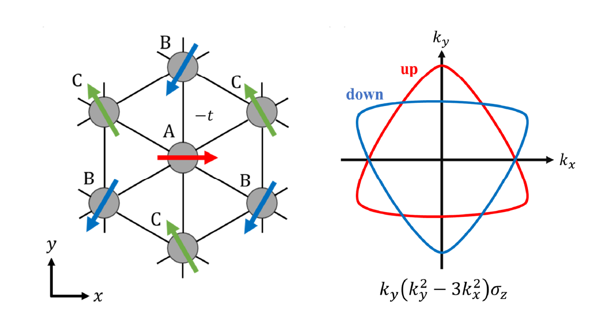
近年、正味の磁化がゼロである反強磁性体においても、運動量に依存したスピン分裂バンドが生じることが明らかになり、大きな注目を集めています。 これらの磁性体は、従来の強磁性体のように一様なスピン分裂を示す系とも、スピン縮退したバンドをもつ通常の反強磁性体とも質的に異なり、 「交替磁性体（altermagnet）」と呼ばれています。 交替磁性体では、時間反転対称性の破れにより電子の波数とスピンが結合し、その結果として波数空間に対称なスピン分裂バンドが現れます。 特に重要なのは、このスピン分裂が相対論的なスピン軌道相互作用を必要とせず、磁気秩序そのものに起因して生じる点です。 そのため、幅広い物質群においてスピン流生成が期待されており、有機導体などで電場や温度勾配によるスピン流生成が報告されています。 さらに最近では、空間反転対称性が破れたノンコリニア反強磁性体において、波数の奇数次とスピンの結合に由来する反対称スピン分裂が理論的に示されるなど、 交替磁性体の枠組みは大きく拡がりつつあります。
本研究では、この反対称スピン分裂を示す「f波交替磁性体」において、
弾性波に由来する格子歪みによってスピン流が生成される機構を理論的に解析しました。
モデルとして、二次元三角格子上にノンコリニア反強磁性秩序を表現する強束縛模型を導入し、
弾性波による最近接ホッピング積分の変調を通して格子歪みの効果を取り入れました。
そして線形応答理論に基づき、縦波や横波の弾性波によって誘起されるスピン流を計算しました。
その結果、f波型の反対称スピン分裂がスピン軌道相互作用に頼らずともスピン流応答を大きく増強することや、
弾性波の伝播方向に応じて生成されるスピン流が特徴的な角度依存性を示すことを明らかにしました。
本成果は、弾性波を用いてスピン流を制御する新しい機構を提示するものです。
K. Uchino, Y. Ogawa, and S. Hayami, J. Phys. Soc. Jpn. 95, 034710 (2026)
勾配磁場が誘起する磁気トロイダル物性
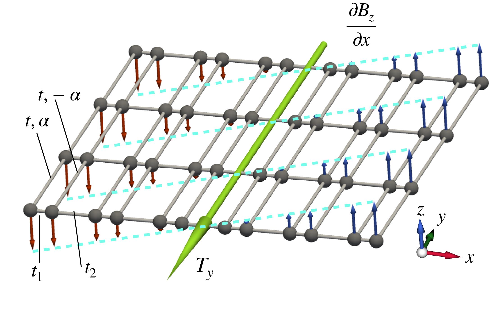
多極子理論は、もともとf電子系物質に対する研究を中心に発展してきた理論で、さまざまな物性現象をマクロな対称性やミクロな電子自由度の観点から理解するために用いられます。 一般的に多極子は、時間反転対称性と空間反転対称性に関するパリティに応じて、電気多極子、磁気多極子、磁気トロイダル多極子、電気トロイダル多極子の4つに分類されます。 その中でも、時間反転対称性と空間反転対称性の両方のパリティが奇である磁気トロイダル双極子が秩序化した物質では、電気磁気効果や非相反伝導といった、興味深い物理現象が現れることが知られています。 また、電気双極子には電場が、磁気双極子には磁場が対応するように、それぞれの多極子には、対応する共役な外場が存在し、これらの外場を印加することで多極子の制御が可能になります。 上述の磁気トロイダル双極子を制御するには、時間反転対称性と空間反転対称性の両方を同時に破るような外場、すなわち電場と磁場を両方印加することが必要になります。
本研究では、従来とは異なり、磁場のみを印加することで、磁気トロイダル双極子を制御する可能性があるかどうかを理論的に調べました。
その際に注目したのが、空間的に変調するような磁場勾配です。
磁場勾配は、通常の一様な磁場とは異なり、空間反転対称性と時間反転対称性を同時に破る外場に相当するため、磁気トロイダル双極子の新たな共役場として期待されます。
こうした可能性を明らかにするために、磁場勾配の効果を取り入れた二次元格子模型に対する理論解析を行いました。
具体的には、電気伝導の性質を記述するボルツマン方程式を解析することで、磁場勾配下において、磁気トロイダル双極子に特有の非線形非相反伝導が現れることを示しました。
さらに、この現象には、相対論効果である反対称スピン軌道相互作用が重要な役割を果たしていることを見出しました。
T. Yamanaka, Y. Ihara, and S. Hayami, J. Phys. Soc. Jpn. 94, 083705 (2025)
異方的磁気双極子が示す異常ホール効果
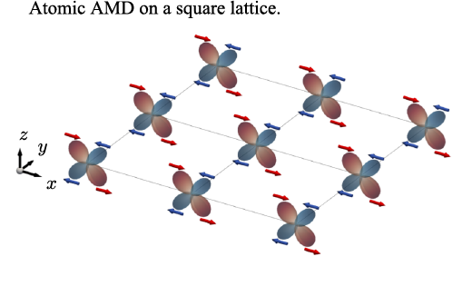
異常ホール効果の大きさは磁化に比例するため、従来は強磁性体に特有の現象として盛んに研究されてきました。 しかし、近年の研究により、磁化がほぼゼロに近い反強磁性材料においても異常ホール効果が発現することが明らかになってきています。 このような反強磁性体は、高速かつ高集積な次世代メモリ材料として、スピントロニクス分野で大きな注目を集めています。 一方で、異常ホール効果を示す反強磁性体はこれまでに複数報告されていますが、強磁性体が示す異常ホール伝導度と同程度の大きな応答は、いまだ十分には得られておらず、 実用化を目指す上では、強磁性体と同等の異常ホール効果を示す反強磁性体を見つけることが重要な課題となっています。 微視的な観点からは、反強磁性体で異常ホール効果が発現するための重要な物理量として、異方的磁気双極子が提案されていました。 この物理量は、対称性の観点ではスピン磁気双極子や軌道磁気双極子などの強磁性型の磁気双極子と同様でありながら、正味の磁化を示さないという点で従来の磁気双極子とは本質的に異なる性質を持っています。 しかしながら、異方的磁気双極子が異常ホール効果に与える影響については、まだまだ十分には理解されていないのが現状です。
本研究では、異方的磁気双極子が異常ホール効果にもたらす役割を明らかにするために、2次元正方格子上のp軌道模型を用いて理論解析を行いました。
また、従来の強磁性に由来する異常ホール効果との違いを検討するために、異方的磁気双極子秩序とスピン磁気双極子秩序の2つの秩序状態を比較しました。
その結果、それぞれの秩序状態において、異常ホール効果およびベリー曲率を久保公式を用いて評価することで、運動量空間におけるベリー曲率の分布や模型パラメータへの依存性が大きく異なることを明らかにしました。
特に異方的磁気双極子を伴う秩序状態では、スピン軌道相互作用の大きさが磁気的な分子場よりも小さいときに、異常ホール効果が大きく増強され、スピン磁気双極子による異常ホール効果を上回ることを示しました。
これらの結果は、異方的磁気双極子を伴う反強磁性体において、巨大な異常ホール効果が発現する可能性を示唆するものです。
S. Ohgata and S. Hayami, Phys. Rev. B 112, 014421 (2025)
直線偏光電場によるトポロジカルスピン結晶生成
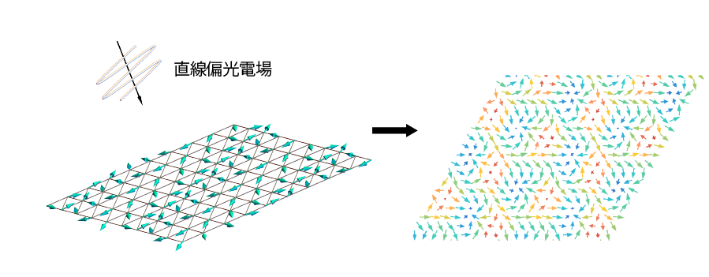
トポロジカルに非自明な磁気構造を示すトポロジカルスピン結晶は、自発磁化を必要としないホール効果や電流による駆動運動など、さまざまな創発的物性現象の源として注目を集めています。 こうしたトポロジカルスピン結晶の中でも磁気スキルミオン結晶の安定化に関しては、これまでにさまざまな理論模型が提案されており、たとえば強磁性交換相互作用とジャロシンスキー・守谷相互作用の競合、 あるいは強磁性交換相互作用と反強磁性交換相互作用の競合を含む模型などが挙げられます。 また、これら多くの模型に共通する要素として、外部磁場の存在が必要である点が指摘されています。 一方近年では、パルス電場や円偏光電場など、外部磁場とは異なる外場によってスキルミオン結晶相を生成する可能性が理論的に示されるなど、トポロジカルスピン結晶の新たな安定化機構に関する研究が活発に行われています。
本研究では、フラストレート磁性体に対して直線偏光電場を照射することで、トポロジカルスピン結晶が生成可能であるかを理論的に検討しました。
具体的には、らせん磁気構造が基底状態として現れる三角格子上の古典ハイゼンベルグ模型を用い、直線偏光電場の効果として逆ジャロシンスキー・守谷機構に起因する局所的な電気双極子との結合項を導入しました。
系の時間発展を調べるために、ランダウ-リフシッツ-ギルバート方程式に基づいた数値解析を行い、非平衡定常状態における磁気構造を探索したところ、基底状態のエネルギースケールよりも小さな周波数領域において、
トポロジカル数1で特徴づけられるトポロジカルスピン結晶相が現れることを見出しました。
さらに、その磁気構造が、容易面異方性を持つフラストレート磁性体において報告されているバイメロン結晶と同一であることを明らかにしました。
T. Shirato, R. Yambe, and S. Hayami, J. Phys. Soc. Jpn. 94, 063601 (2025)
多軌道f電子系における磁気スキルミオン相
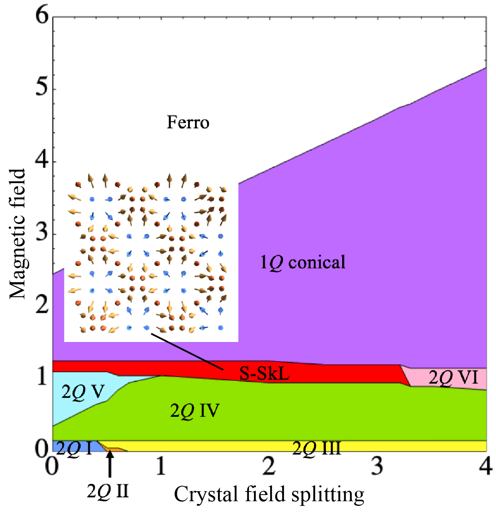
渦巻き状の磁気構造をもつ磁気スキルミオンは、次世代の高密度記録媒体やスピントロニクスデバイスにおける有望な機能性要素として、近年大きな注目を集めています。 これは、磁気スキルミオンがトポロジカルな保護性を備え、連続的な変形に対して構造が破壊されにくいという特性に起因します。 近年では、多数のスキルミオンが秩序よく並んだ「スキルミオン格子」が、系の空間反転対称性の有無に依らずに発見されるなど、理論・実験の研究が急速に進展しています。 しかし、空間反転対称性を有する格子構造に対するスキルミオン格子の研究の多くは、Gdイオンや Euイオンのように軌道角運動量をもたない4fイオンに焦点が当てられるなど、 多軌道性の効果が本質的な重要な役割を果たす系での安定性の起源については明らかになっていませんでした。
本研究では、多軌道効果が重要なCeイオンから系に注目し、スピン–軌道相互作用および結晶場によるエネルギー準位分裂がスキルミオン格子形成に与える影響を理論的に検討しました。
空間反転対称性を有する正方格子上の2軌道模型を解析の対象とし、平均場近似による数値計算を実施しました。
その結果、複数のエネルギー準位が近い状況、すなわち多軌道効果によって、正方格子型のスキルミオン格子が安定に存在できることを明らかにしました。
本研究は、スピン–軌道相互作用と結晶場の複合的効果による新しい形成機構を提案するものであり、Ceイオンからなる4f電子系におけるトポロジカル磁気構造の理解と設計指針に新たな視点を提供します。
Y. Zha and S. Hayami, Phys. Rev. B 111, 165155 (2025)
カイラル系が示す周波数が非対称な非線形光学応答
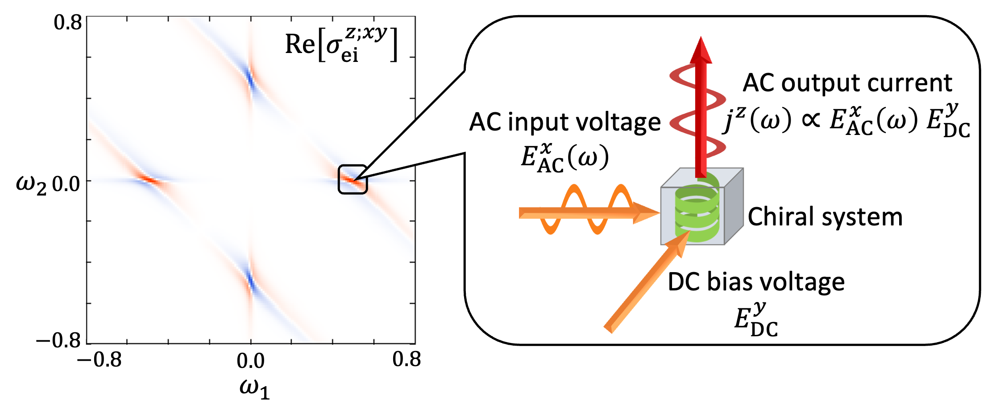
空間反転対称性をもたない系では、第二次高調波発生や非相反伝導、⾮線形ホール効果といった印加電場に関して二次に比例する非線形電気伝導現象が現れます。 この現象はランク3の極性テンソルである非線形電気伝導度テンソルで特徴づけられ、 ランク1,3の極性な電気(磁気トロイダル)多極子モーメントおよびランク0,2の軸性な電気トロイダル(磁気)多極子モーメントの下で現れます。 これまでの研究では、主としてランク1から3の多極子モーメントに関連する非線形電気伝導現象に関する研究が行われていましたが、 一方、ランク0の電気トロイダル単極子がどのような非線形電気伝導を誘起するかはよくわかっていませんでした。
本研究では、カイラル結晶構造のもとで現れる非線形光学応答現象を群論および模型解析を用いて調べました。
まず、群論による解析から電気トロイダル単極子に由来する二次の非線形電気伝導度が、異なる2周波数のもとで有限になることを明らかにしました。
次に、電気トロイダル単極子自由度を有する結晶構造に対して、久保公式を用いた模型計算を行うことで、カイラル結晶構造に由来する反対称スピン軌道相互作用が上記の非線形光学応答の発現に重要な役割を果たしていることを明らかにしました。
S. Kanda and S. Hayami, Phys. Rev. B 111, 035130 (2025)
フェロアキシャル秩序における電子秩序変数の微視的起源
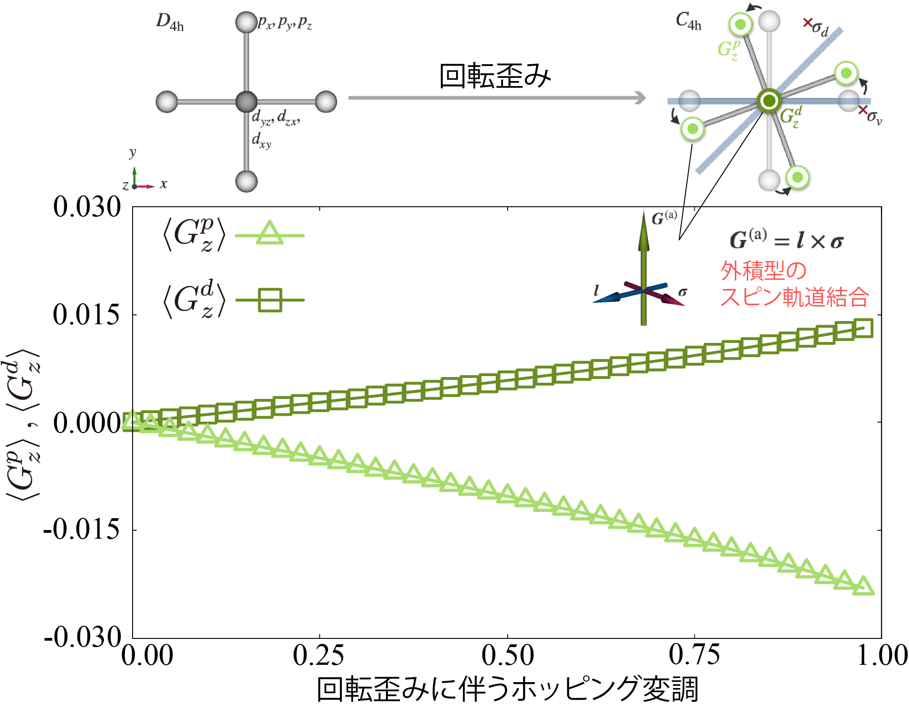
主軸に平行な鏡映対称性の破れを伴うフェロアキシャル秩序相では、時間反転偶の軸性ベクトルである電気トロイダル双極子モーメントが強的に配列します。 こうしたフェロアキシャル秩序相は、実験的にはリガンドイオンの回転変位に伴う秩序状態として、CaMn7O12, RbFe(MoO4)2, NiTiO3, Ca5Ir3O12などで観測されています。 一方で理論的には電気トロイダル双極子モーメントは、複数サイトからなる電気分極の渦巻き構造、あるいは1サイト上のスピンと軌道角運動量の外積として微視的に定義されることが提唱されています。 しかし、後者の1サイト上で定義される電気トロイダル双極子モーメントに関しては、どのような微視的な電子自由度がその発現に関与しているかは明らかにされていませんでした。 特に、リガンドイオンの回転変位と電気トロイダル双極子モーメントの微視的結合機構に関しては未解明でした。
本研究では、これまで対称性の観点から、現象論的に導入されてきた1サイト上の電気トロイダル双極子モーメントに関する微視的起源の解明を模型計算により試みました。
具体的には、ダブルペロブスカイト構造を模した4つのリガンドイオンと1つの遷移金属イオンからなる2次元正方形クラスター模型を用いて、
遷移金属イオン上において電気トロイダル双極子モーメントが誘起されるために必要な模型パラメータを解析しました。
摂動論と多極子基底を用いた数値解析の結果、回転歪みに伴う中心サイトとリガンドサイト間の混成効果およびリガンドサイト上のスピン軌道結合の協奏効果により、遷移金属サイト上の電気トロイダル双極子が誘起されることを明らかにしました。
A. Inda and S. Hayami, Phys. Rev. B 111, L041104 (2025)[selected in Editors' Suggestion]
機械学習を用いたスピン模型の構築とスキルミオン機構探索
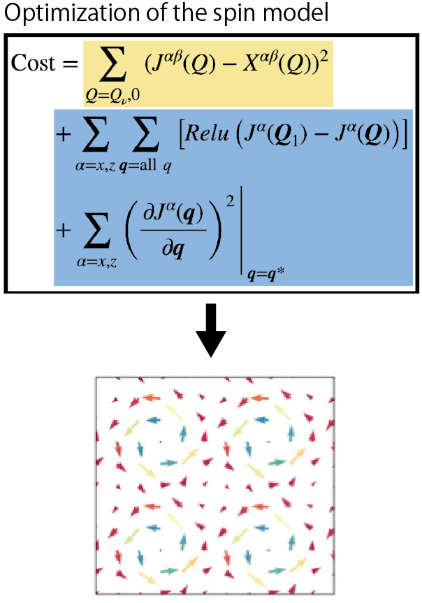
近年、磁気スキルミオン結晶と呼ばれるトポロジカルな磁気構造が、創発電磁応答現象を引き起こす起源として注目を集めています。 磁気スキルミオン結晶の安定化機構としては、空間反転対称性の破れた系で現れるジャロシンスキー・守谷相互作用が重要な役割を果たしていることが指摘されており、 実際にMnSiをはじめとする多くのカイラル磁性体や極性磁性体で観測されています。 一方、磁気スキルミオン結晶はジャロシンスキー・守谷相互作用が現れないような空間反転対称性をもつ物質であるGd2PdSi3やGdRu2Si2でも観測されており、 理論的には交換相互作用のフラストレーションや遍歴電子と局在スピンの結合に由来する交換相互作用がその安定化機構として提唱されています。 特に、GdRu2Si2においては正方格子型の磁気スキルミオン結晶が現れますが、 その実現には上記のような相互作用に加えてボンド方向に依存する磁気異方性が必要であるとされていました。 また、こうした磁気スキルミオン結晶の探索の際には、模型が有する大量のパラメータ空間に対して計算を行う必要があるため、 膨大な計算資源と時間が必要でした。
本研究では、正方格子型の磁気スキルミオン結晶の安定化を得ることが比較的容易な波数空間スピン模型を教師データとして有効実空間スピン模型の構築を行いました。
また、得られた有効実空間スピン模型の基底状態と有限温度相図をシミュレーテッドアニーリング法およびモンテカルロシミュレーションにより調べました。
その結果、従来は必要とされていたボンド方向に依存する磁気異方性がない場合にも正方格子型の磁気スキルミオン結晶が安定化するという新しい機構を明らかにしました。
これらの結果は、機械学習を援用した解析により、正方格子型の磁気スキルミオン結晶をはじめとする特殊な磁気構造を実現するようなスピン模型を効率的に生成することができるということを示しています。
K. Okigami and S. Hayami, Phys. Rev. B 110, L220405 (2024)
フェロアキシャル秩序下における磁気異方性と磁気不安定性
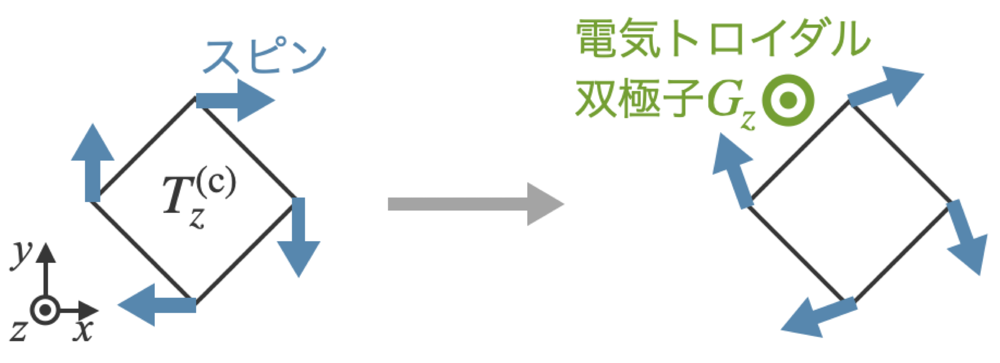
磁気構造の安定性と結晶構造の対称性は、その対称性を反映した異方的な磁気的相互作用を介して密接に関係しています。 例えば空間反転対称性の破れた系では、ジャロシンスキー・守谷相互作用が現れ、これが強磁性的な交換相互作用と競合することにより、カイラルらせん磁気構造やスキルミオン結晶の微視的起源になります。 一方、時間・空間反転対称性は有するが、鏡映対称性の破れたフェロアキシャル秩序系において、どのような磁気不安定性が生じるのかについてはよくわかっていませんでした。 ここでフェロアキシャル秩序相とは、時間反転偶の軸性ベクトルである電気トロイダル双極子モーメントが強的に配列した状態であり、外場と応答の空間・時間のパリティが等しい非対角応答現象の発現を引き起こすという従来の秩序相とは異なる物性を示すことから近年注目を集めています。
本研究では、フェロアキシャル秩序下における磁気異方性および磁気不安定性の理論解析を行いました。
具体的には、スピン軌道相互作用および電気トロイダル双極子を促す分子場に関する摂動計算を行うことで、フェロアキシャル秩序相のもと磁気異方性が現れるための微視的条件を明らかにしました。
また、得られた理論形式を3サイト副格子および4サイト副格子からなる5軌道d電子模型に適用し、サイト依存する結晶場、スピン軌道相互作用、交換相互作用を考慮した平均場計算を行うことで、異なるヘリシティを有する渦型の磁気構造が発現することを見出しました。
A. Inda and S. Hayami, Phys. Rev. B 109, 174424 (2024)
電気トロイダル単極子を用いたキラリティの定量的評価
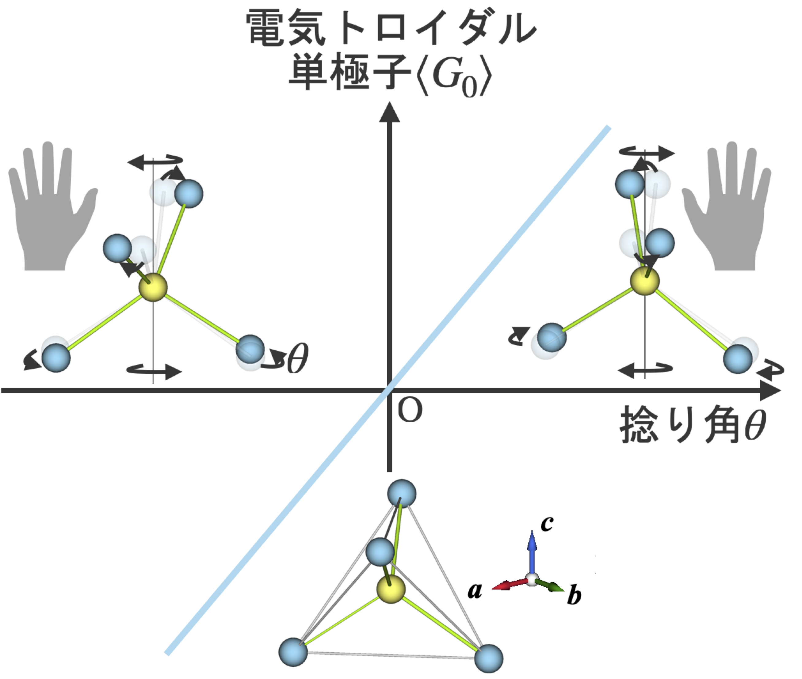
キラリティは自身とその鏡像が重ならない形態を指す用語です。 対称性の観点からは空間反転対称性および鏡映対称性の破れを伴うが、時間反転対称性の保たれた擬スカラー量として特徴づけられます。 こうしたキラリティ構造する有する分子や結晶は多数存在しており、最近ではキラリティ誘起スピン選択性などの興味深い現象が多数報告されています。 一方、こうしたキラリティに対する対称性の枠組みを超えた微視的表式は未知であったため、物質がもつキラリティ度合いに関する定量的理解は不十分でした。
本研究では、電子系の自由度を微視的に記述する多極子完全基底に基づいた理論解析により、電気トロイダル単極子G0がキラリティの定量的評価に適した物理量であるという理論提案を行いました。
具体的には、アキラルなメタン分子に対して適当な構造歪みを考慮することで、メタン分子をキラル化する状況を考え、そのもとでキラル度を電気トロイダル単極子G0を評価することで解析しました。
解析の際には、第一原理バンド計算の結果から有効ワニエ模型を用い、得られた状態空間内の電子自由度に対して活性になり得るG0の表式を導出しました。
得られた有効模型において、キラル化を促す構造歪みの影響を取り込むことで、G0の期待値を評価し、その符号と大きさが、掌性とボンド変調度合いに関係していることを明らかにしました。
また、G0を誘起するための必要な微視的要素についての解析も行い、スピン軌道相互作用に由来するスピン依存型の電子ホッピングが重要な役割を果たすことを明らかにしました。
A. Inda, R. Oiwa, S. Hayami, H. M. Yamamoto, and H. Kusunose, J. Chem. Phys. 160, 184117 (2024)
対称性に基づくレーザー誘起磁気異方性の分類
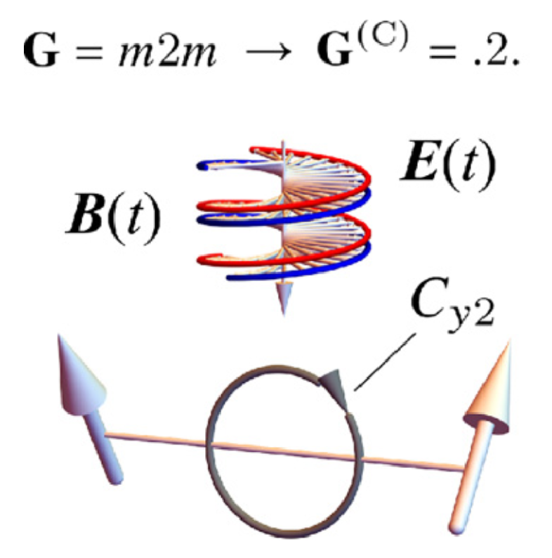
物性は、電場や磁場、圧力といった外場によって大きく性質を変えることがあります。 その中でも近年における実験技術の向上および理論の進展に伴い、レーザーを用いた新しい物性制御の試みが行われています。 とりわけ、時間周期的なレーザー下での物性制御の指針を得るための理論として、フロッケ理論が構築されました。 これは、時間に関して周期的なレーザーのもとでの系の時間発展を時間依存性のない有効ハミルトニアンを用いて記述することを可能にするため、これを用いることで従来では困難であった非平衡状態における物性を調べることができるようになります。 例えば、系の磁性がレーザーによってどのような変調を受けるかは、フロッケ理論から得られる有効的な磁気相互作用を調べることによって理解できます。 先行研究では、らせん構造やスキルミオン構造といった非共線/非共面的な構造を制御できるということが、特定の結晶構造のもとで示されてきましたが、一方で、結晶構造がもつ対称性の影響については明らかにされていませんでした。
我々は、磁性絶縁体における磁化（電気分極）が円偏光レーザー磁場（電場）と結合した際に生じるレーザー誘起磁気異方性を、点群対称性およびフロッケ理論の観点から詳細に調べました。
先行研究では電気分極が逆ジャロシンスキー・守谷(DM)機構で生じるとき、最近接交換相互作用の異方性として反対称相互作用に相当するレーザー誘起DM相互作用が現れることが示されていましたが、
本研究では、より一般的なスピン依存する電気分極機構を起点とすることで、ボンド間に生じる対称・反対称相互作用に相当するレーザー誘起異方性を全て導出することに成功しました。
ここで、スピン依存する電気分極は結晶構造に依存するため、得られたレーザー誘起異方性は結晶点群に応じて大きく異なりますが、網羅的な解析によってそれらの分類を系統的に行いました。
その結果、円偏光レーザー磁場と電場の一次の結合を通じて、系は構造キラリティをもつように磁気異方性を獲得することを示しました。
さらに、円偏光レーザー電場に関する二次の結合を通じて、スピンと電気四極子間の異方的相互作用が生じることを見出し、それらがレーザーによる結晶構造対称性の低下に起因することを明らかにしました。
R. Yambe and S. Hayami, Phys. Rev. B 108, 064420 (2023)
フェロアキシャル秩序が示す非線形横磁気応答
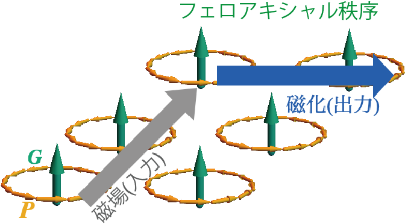
固体中における電子間の多体相互作用の結果として発現する多様な電子秩序相は、様々な自発的対称性の破れによって特徴づけられます。 例えば、強誘電性を示す電子秩序相(強誘電相)は空間反転対称性が破れた際に発現し、強磁性を示す電子秩序相(強磁性相)は時間反転対称性が破れた際に発現します。 こうした電子秩序相のミクロな秩序変数は、多極子モーメントによって表現することができます。 例えば、先ほどの強誘電相では、空間反転に関するパリティが奇、時間反転に関するパリティが偶の電気双極子モーメントが秩序変数に相当し、強磁性相では、それらのパリティが逆の磁気双極子モーメントが秩序変数に相当します。 またもう少し複雑な例としては、強誘電性と強磁性の両方の性質を併せ持つマルチフェロイクス相があり、こちらの秩序変数としては空間・時間両者のパリティが奇である磁気トロイダル双極子モーメントが相当します。
さらに、固体中では空間反転対称性や時間反転対称性以外にも結晶の回転対称性や鏡映対称性があるため、より多彩な自発的対称性の破れが可能になります。
本研究では、空間反転対称性や時間反転対称性ではなく鏡映対称性の破れによって特徴づけられるフェロアキシャル秩序相が示す物性現象に着目しました。
フェロアキシャル秩序相の秩序変数は、空間・時間両者のパリティが偶の電気トロイダル双極子モーメントによって表現され、
これは上記の3つの双極子モーメントとは異なる空間・時間パリティをもつことがわかっていますが、一方、空間・時間対称性から電場および磁場と直接結合しないため、その電磁気的性質は未解明なままでした。
そこで、フェロアキシャル秩序特有の物性現象を開拓するために、電気トロイダル双極子モーメント自由度を有する正方格子d電子模型に対する理論解析を行いました。
平均場計算および非線形久保公式に基づいた理論解析を行った結果、フェロアキシャル秩序が発現した際には外部磁場の3乗に比例した非線形横磁化応答が現れることを明らかにしました。
また得られた磁化率の式を解析・数値的に吟味することにより、その発現に重要な模型パラメタや遷移過程についても明らかにしました。
A. Inda and S. Hayami, J. Phys. Soc. Jpn. 92, 043701 (2023)
ハニカム遍歴磁性体のもとで発現する多様な磁気スキルミオン結晶
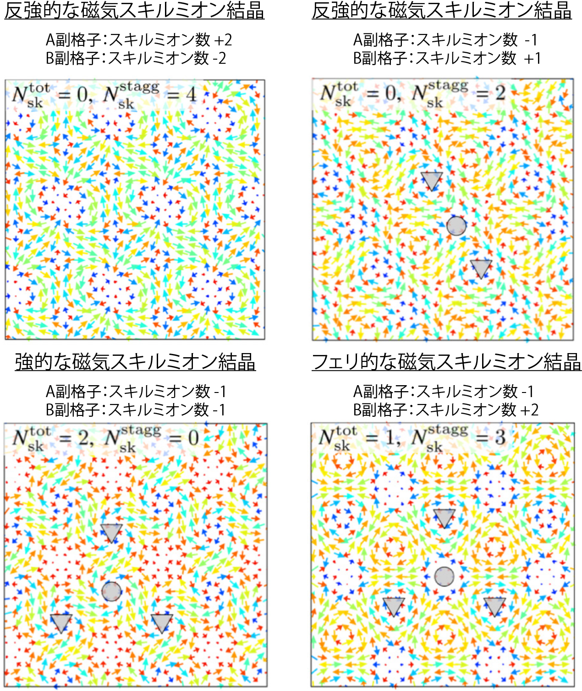
トポロジカルに非自明な磁気構造をもつスキルミオン結晶の理論研究に際しては、その構成要素である電子のスピン自由度を含む有効スピン模型に対する研究が多く行われてきました。 一方、固体中には電子のスピン自由度に加えて、電荷自由度や副格子自由度など様々な内部自由度が存在します。 こうした多自由度模型では、自由度間の協奏効果により、従来とは異なるトポロジーの性質を示すスキルミオン結晶の発現が期待できます。 実際にこれまでにも、電荷・スピン自由度をもつ近藤格子模型でスキルミオン数が2のスキルミオン結晶の発現が明らかにされていました。 また、副格子自由度をもつハニカム構造下のスピン模型では、系全体のスキルミオン数の和がゼロになるが、各副格子におけるスキルミオン数が交替的な整数値(+1または-1)で特徴づけられる反強的なスキルミオン結晶が現れることが指摘されています。 このように電子がもつ様々な内部自由度を取り込んだ系では、多彩なスキルミオン結晶の発現が予期されますが、自由度が多くなると解析は困難になるため、 これらの研究は十分に行われてきませんでした。
本研究ではスピン・電荷・副格子自由度の3つの自由度間の協奏効果に着目することで、さらなる新規スキルミオン結晶の可能性および発現機構を理論的に調べました。
そのために最も基本的な模型であるハニカム格子上の近藤格子模型を起点として、摂動論を用いてスピン-電荷自由度の結合効果を含む有効スピン模型を導出しました。
また得られた模型に対して数値焼きなまし法を用いることで磁場相図を作成し、
その結果、次のような異なるスキルミオン数で特徴づけられる四種類のスキルミオン結晶相が広いパラメタ領域で発現することを見出しました。
・各副格子におけるスキルミオン数が+2と-2を取る反強的なスキルミオン結晶 (左上図)
・各副格子におけるスキルミオン数が+1と-1を取る反強的なスキルミオン結晶 (右上図)
・各副格子におけるスキルミオン数が-1と-1を取る強的なスキルミオン結晶 (左下図)
・各副格子におけるスキルミオン数が+2と-1を取るフェリ的なスキルミオン結晶 (右下図)
R. Yambe and S. Hayami, Phys. Rev. B 107, 014417 (2023)
様々な結晶点群における多重Q磁気秩序を統一的に理解するための有効スピン模型構築
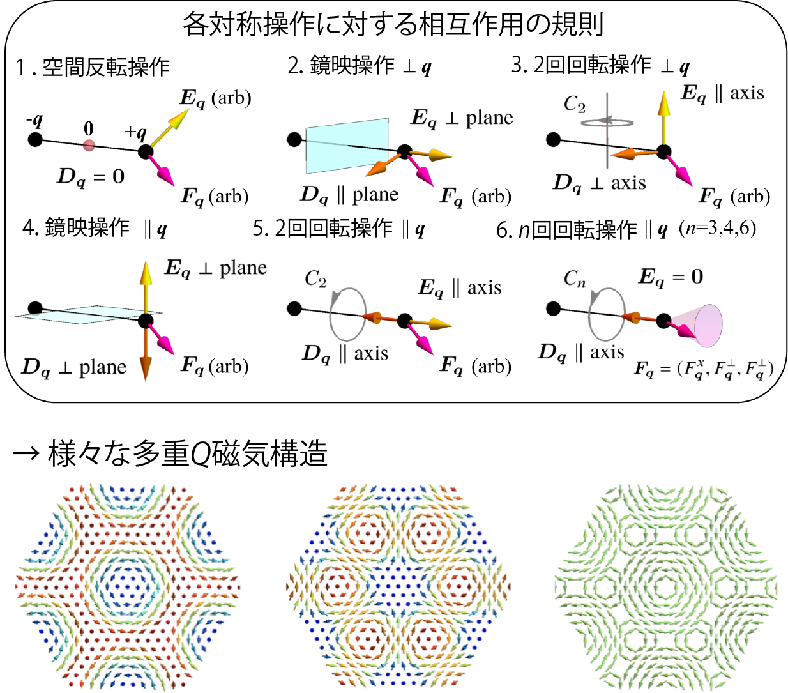
複数のらせん構造を重ね合わせた多重Q磁気構造により特徴づけられる磁気スキルミオン結晶は、特異な電子状態や輸送現象を引き起こす起源となることから注目を集めています。 これまでに、こうした磁気スキルミオン結晶に対する安定化機構の理論解析は空間反転対称性の有無に着目して行われてきました。 例えば、空間反転対称性が破れた結晶系では、強磁性相互作用とジャロシンスキー・守谷相互作用の競合が磁気スキルミオン結晶の安定性に重要な役割を果たしており、 空間反転対称性をもつ結晶系では、強磁性・反強磁性交換相互作用の競合や、フェルミ面不安定性に起因した多重スピン相互作用がその安定性に重要であるということが明らかにされています。 さらに最近では、結晶構造に依存した磁気異方性が磁気スキルミオン結晶の新しい安定化機構のひとつとして提案されています。 一方、磁気異方性に由来する相互作用の形は、結晶構造に大きく依存しますが、それらの影響は個別の状況に応じてのみ議論されてきました。
本研究では、立方晶系、正方晶系、六方晶系および三方晶系に属する24個の結晶点群に対して、磁性表現論を駆使することで波数依存性をもつ異方的相互作用の分類を行いました。
その結果、結晶がもつ種々の対称操作に応じて6つの規則が存在することを見出しました。
また、摂動論から導出した有効模型を解析することで、異方的相互作用の符号や大きさを電子状態や結晶場パラメータによって大きく制御できることを示しました。
さらに、これらの効果を取り込んだ有効スピン模型を構築し、数値シミュレーションを行うことで、異方的相互作用が磁気スキルミオン結晶を含む多様な多重Q磁気秩序の源になっていることを明らかにしました。
R. Yambe and S. Hayami, Phys. Rev. B 106, 174437 (2022)
R. Yambe and S. Hayami, Phys. Rev. B 107, 174408 (2023)
強磁性-反強磁性2層系におけるスキルミオン結晶
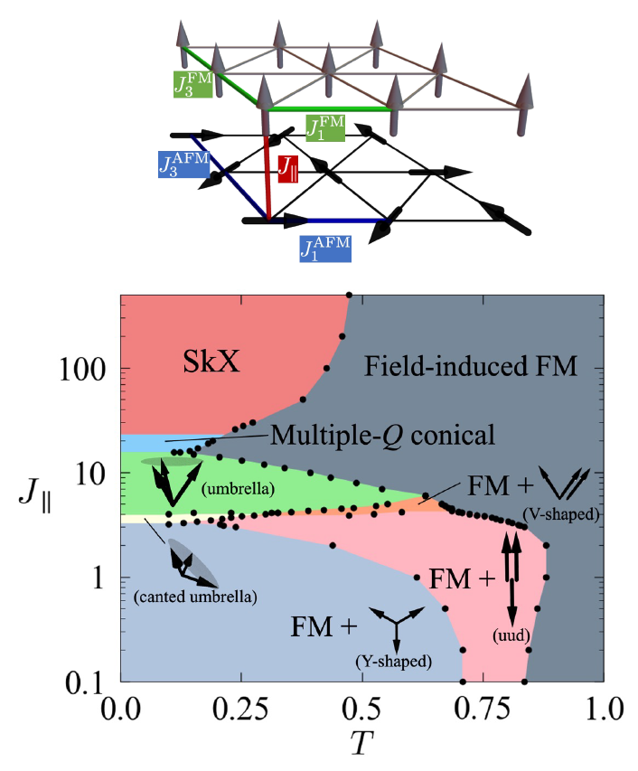
トポロジカルに非自明な渦状のスピン構造を示す磁気スキルミオン結晶は，様々な電磁応答現象を引き起こす起源となることから注目を集めています． こうした磁気スキルミオン結晶が示す多彩な物性をより深く理解するためには，これらの状態が実現する結晶構造や電子状態を明らかにする必要があります．
我々は，その中でも結晶構造における多層自由度を用いることによって磁気スキルミオン結晶を実現する可能性に着目しました．
特に，単層ではそれぞれ強磁性秩序および反強磁性秩序を示す2つの層を組み合わせた強磁性-反強磁性2層構造からなるスピン模型に対して，
基底状態下での変分計算および有限温度下でのモンテカルロ計算を行うことで，有限波数で特徴づけられるらせん磁性相および磁気スキルミオン結晶相が安定に発現するパラメタ領域を明らかにしました．
特に，2層間における強磁性相互作用と反強磁性相互作用の競合が重要な役割を果たすことを見出しました．
本結果は，積層構造を利用することによって磁気スキルミオン結晶を生成する理論指針を与えるものです．
K. Okigami, R. Yambe, and S. Hayami, J. Phys. Soc. Jpn. 91, 103701 (2022)
ボンド上の磁気トロイダルモーメントを用いた非相反マグノンバンド生成
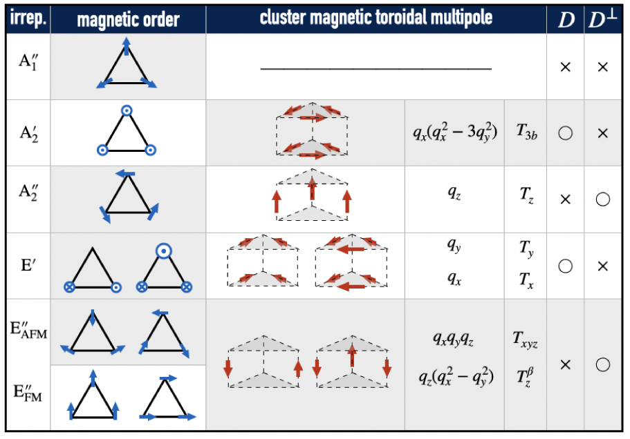
マグノンの励起構造が波数qと-qに関して非対称になる非相反マグノン励起は，非相反な光学応答や熱伝導の源となることから精力的に研究が行われています． こうした非相反マグノンを示す代表的な磁性体としては，空間反転対称性のない格子構造下での強磁性体が挙げられます． しかし，複雑な格子構造や磁気構造のもとで，マグノン励起構造にどのような非対称分散が生じるか，といった系統的な理解は得られていませんでした．
我々は時間反転対称性と空間反転対称性がともに破れた際に現れる磁気トロイダル多極子に着目して，非相反マグノンが発現するための微視的条件を調べました．
その結果，ボンド上で磁気トロイダル双極子自由度が活性になることにより，マグノンに非相反性が現れることを見出しました．
さらに，磁気構造を特徴づけるクラスター多極子とマグノンの非対称分散の関係性を明らかにしました．
本結果は，あらゆる格子構造および磁気構造に適用可能であるため，ミクロな立場からの非相反マグノンバンド生成に大きく役立つことが期待できます．
T. Matsumoto and S. Hayami, Phys. Rev. B 104, 134420 (2021)
122の磁気点群に対する多極子の分類論
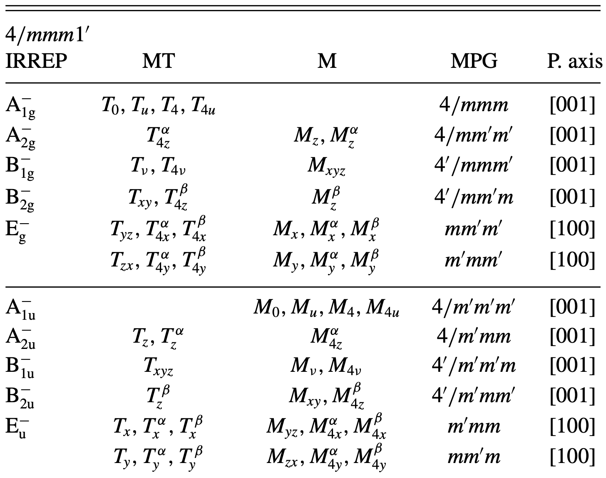
磁性体中の秩序状態は，電子がもつ磁気双極子モーメントの空間的な配列によって特徴づけられますが，その組み合わせには無限の可能性が存在します． 膨大な磁気構造の中から，異常ホール効果や電気磁気効果などの興味深い物性現象を示す磁気構造を抽出して，系統的に調べ上げるために用いられるのがマクロな対称性の概念です． さらに，これらの磁性体をミクロな観点から分類・理解するために導入されたのが，「クラスター多極子」です． 多極子は元々，1原子内における異方的な電荷・磁荷分布を対称性に基づいて表現するために用いられきましたが，最近ではクラスター多極子の概念を導入することで，クラスター内で空間的な構造を有するミクロな磁気双極子の配列と物性現象の結びつきを対称性の枠組みを超えて系統的に表すことができるようになりつつあります．
本研究では，ミクロな電子自由度とマクロな対称性の関係をより深く理解するために，それらを密接に結びつける多極子自由度に立脚した系統的な解析を行いました．
具体的には，磁性体を特徴づける122の磁気点群に対して，活性となる多極子の分類を行うことで，それらの強的な多極子秩序状態がどのような物性現象に対応するかを明らかにしました．
これにより，対称性のみならず，軌道やスピン，副格子といった固体中の内部自由度のうち，どの要素が物性現象の発現に重要であるかを知ることができるようになりました．
本成果により，外場応答などの物性現象とミクロな電子自由度の関係性がより見通し良くなることが期待できます．
M. Yatsushiro, H. Kusunose, and S. Hayami, Phys. Rev. B 104, 054412 (2021)
水平鏡映対称性の破れた系における磁気スキルミオン結晶
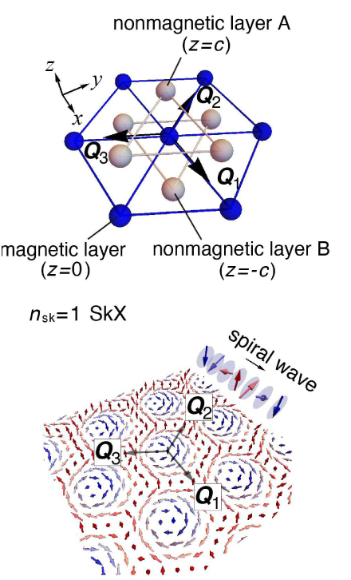
トポロジカルに非自明なスピンテクスチャによって特徴づけられる磁気スキルミオン結晶は，幾何学的位相に起因した電子状態や輸送現象を示すことから注目を集めています． こうした磁気スキルミオン結晶の安定化機構は，主に空間反転対称性の有無に応じて分けられます． 例えば，空間反転対称性が破れた際には，スピン軌道相互作用に由来したジャロシンスキー・守谷相互作用が重要な役割を果たし，また空間反転対称性が保たれている場合には，フラストレート相互作用や，フェルミ面不安定性に起因した多重スピン相互作用が重要な役割を果たします． 一方，結晶には空間反転対称性のみならず，回転対称性や鏡映対称性といった他の点群対称性が存在しますが，これらの対称性の破れが磁気スキルミオン結晶の安定化に与える影響はほとんど明らかにされていませんでした．
本研究では，水平鏡映面をもたない空間反転対称な遍歴磁性体に対する理論解析を行うことで，磁気スキルミオン結晶の新しい発現機構の可能性を調べました．
結晶の対称性を考慮した有効スピン模型を構築し，得られた模型に対して，焼きなまし法および変分法による数値解析を行うことで，水平鏡映面の破れから生じる異方的なRKKY相互作用が，磁場の値に依存して異なるスキルミオン数をもつ磁気スキルミオン結晶を安定化することを明らかにしました．
さらには，磁気スキルミオン結晶を構成するらせん構造の位相自由度が水平鏡映面の破れから生じる異方的なRKKY相互作用と密接に関係していることを見出しました．
R. Yambe and S. Hayami, Sci. Rep. 11, 11184 (2021)
奇パリティ多極子秩序下でのNMR・NQRスペクトルの理論
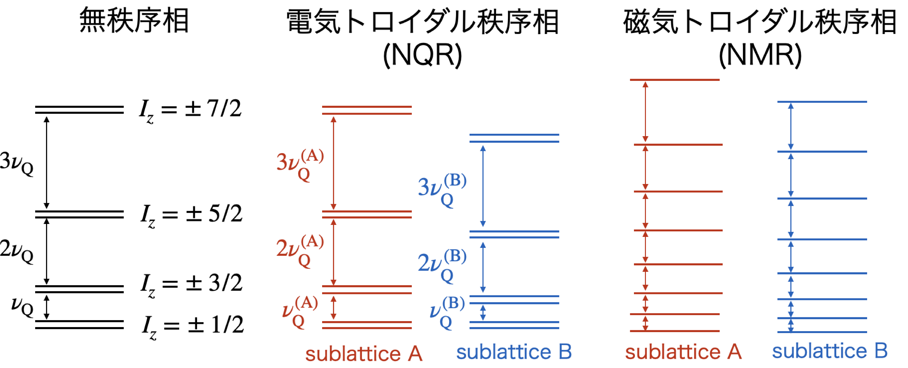
固体中における空間反転対称性の破れは，電気磁気効果などの交差相関応答や非相反な輸送特性などの多彩な物理現象を引き起こすことから近年精力的に研究が行われています． こうした空間反転対称性の破れを伴う電子系の秩序状態は，磁気トロイダル双極子や磁気四極子のような「奇パリティ多極子」によって表現できます． これら奇パリティ多極子を直接観測するために，第二次高調波発生やX線共鳴散乱などの実験手法が従来用いられてきました．
本研究ではこうした従来の測定手法とは異なる，NMR/NQR測定を用いた奇パリティ多極子の微視的観測の可能性について調べました．
対象としては，奇パリティ多極子秩序を示す候補物質であるf電子化合物CeCoSiを取り上げました．
CeCoSiでは，Ceのf電子が交替的に秩序化した反強磁性状態と反強四極子状態の存在が示唆されていますが，これらは奇パリティ多極子の観点からはそれぞれ磁気トロイダル双極子および電気トロイダル四極子とみなすことができます．
そこで，これらの奇パリティ多極子秩序状態がNMR/NQR測定を通じてどのように観測されるのかを理論模型を用いて調べました．
59Coサイトの核スピン・四極子とCeサイトのf電子が形成する多極子の間に生じる有効的な超微細結合を，それぞれの秩序状態に対して導出することで，奇パリティ多極子の発現とそれに伴う共鳴スペクトルピークの分裂の対応関係を明らかにしました．
さらに，その他の奇パリティ秩序変数候補に対しても同様の解析を系統的に行うことで，多様な磁場方向に対するNMR測定を通じて奇パリティ多極子秩序変数を同定できることを示しました．
M. Yatsushiro and S. Hayami,
Phys. Rev. B 102, 195147 (2020)
異方的なボンド相互作用による非相反マグノン励起
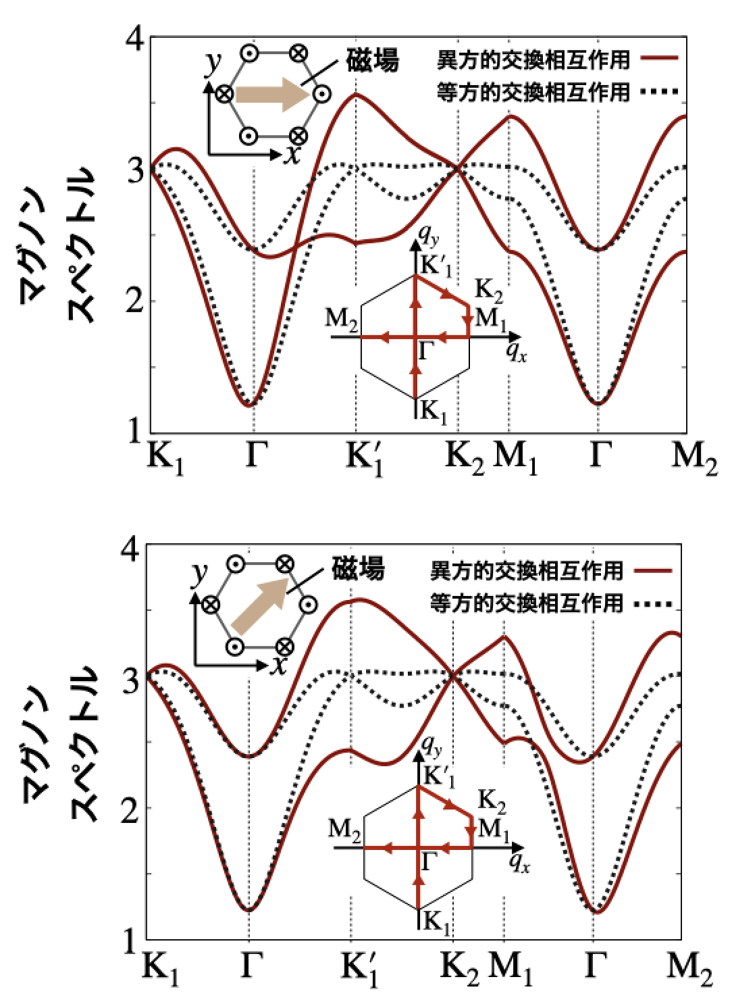
空間反転対称性のない磁性体が示す波数に非対称なマグノン励起は，非相反方向二色性などの様々な興味深い現象を引き起こすことから注目を集めています． こうした非対称マグノンの微視的機構としては，スピン軌道相互作用に由来したジャロシンスキー・守谷相互作用によるものとフラストレート相互作用に由来したベクトルスピンカイラリティによるものに限られており，物質探索の幅が狭まっていました．
我々は非相反マグノン励起の新しい機構を探索する目的で，格子構造に由来した磁気的な異方性の役割に注目しました．
具体的にはハニカム構造上の交替的な反強磁性秩序状態に対して，線形スピン波近似を用いた解析を行うことで，ボンド上にはたらく対称な異方的交換相互作用が非相反マグノン励起の微視的起源となることを，理論的に明らかにしました．
さらに，面内方向の外部磁場を印加することにより，マグノンの非相反方向が磁場によって制御できることを示しました．
T. Matsumoto and S. Hayami,
Phys. Rev. B 101, 224419 (2020)
強いスピン-電荷結合をもつd-p軌道混成自由度が創出するカイラルストライプ相
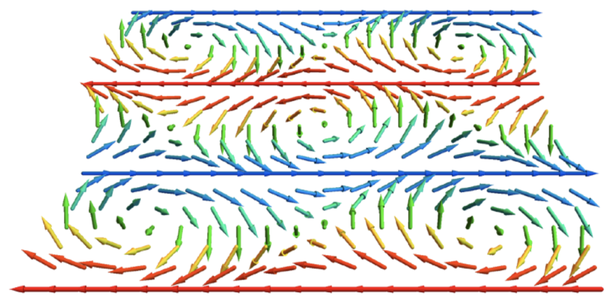
遷移金属酸化物は，電子がもつ電荷・スピン・軌道といった電子自由度間の協奏・競合が生じるため，従来とは異なる巨大磁気抵抗効果やマルチフェロイクスといった多彩な物性現象を研究する舞台となります． 例えば，3d遷移金属酸化物の一つであるSrFeO3では，スピン軌道相互作用の影響が小さいと考えられているにも関わらず，複数のらせん構造を重ね合わせた二重Q磁気秩序あるいは四重Q磁気秩序といった多重Q磁気秩序が発現しており，それに伴う巨大なトポロジカルホール効果が観測されています． 一方で，こうしたスピン軌道相互作用の小さな系では，磁性イオンにおける遍歴電子スピンと局在スピン間に働くスピン-電荷結合が，多重Q磁気秩序の発現において重要な役割を果たすことが理論的に示されていますが，これまでの研究では主にそのスピン-電荷結合定数の大きさが伝導電子のバンド幅に比べて十分に小さい場合に限られており， SrFeO3のような強いスピン-電荷結合を有する強結合領域において，多重Q磁気秩序が生じるかどうかは未解明なままでした．
そこで本研究では，強いスピン-電荷結合をもつ強相関電子系において，多重Q磁気秩序が生じる可能性を理論模型を用いて調べました．
ここではSrFeO3のような遷移金属酸化物を念頭に置き，強いフント結合をもつ磁性イオンのd軌道と配位子である酸素のp軌道からなるd-p模型を考え，変分計算を用いて基底状態の探索を行うことにより，直交する2つのらせんで特徴づけられる二重Q磁気秩序相の一つであるカイラルストライプ相が広いパラメタ範囲において基底状態として安定化することを見出しました．
さらに，その安定化領域はd軌道とp軌道のエネルギー差を表す電荷移動エネルギーに強く影響されることを明らかにしました．
R. Yambe and S. Hayami,
J. Phys. Soc. Jpn. 89, 013702 (2020)
f電子系化合物CeCoSiに潜むクラスター奇パリティ多極子秩序
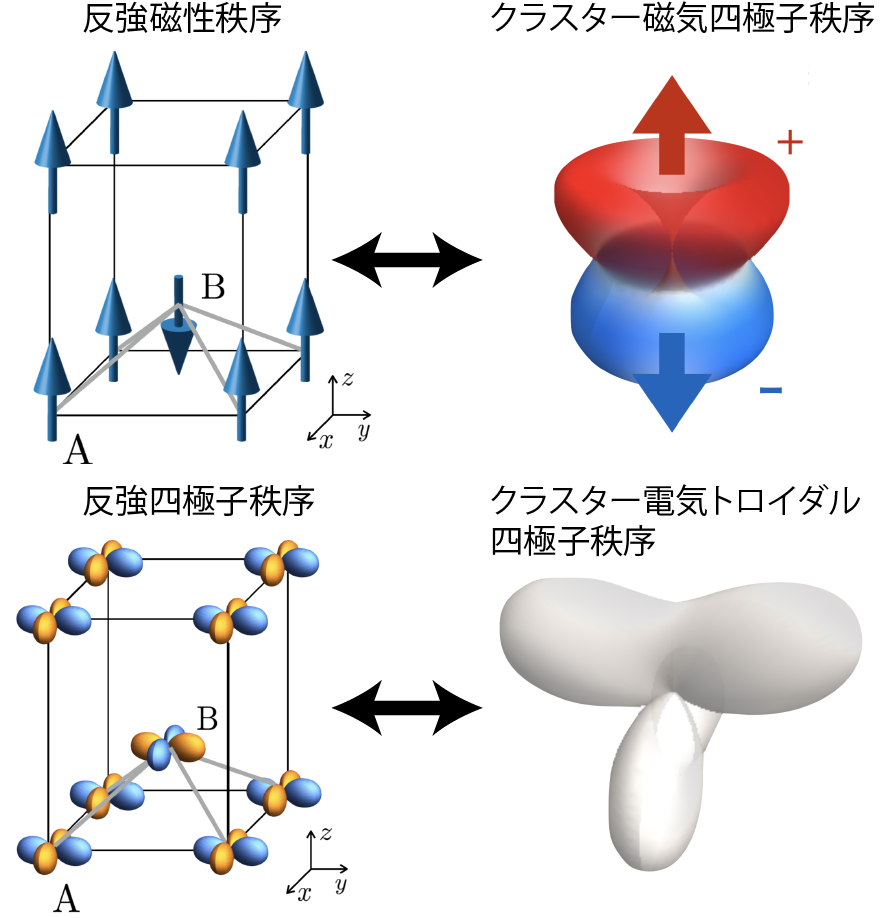
f電子系化合物のCeCoSiは，正方晶系の結晶構造(P4/nmm)を有し，常圧下においては10Kで反強磁性転移を起こし，また高圧下では，新たな圧力誘起相が現れることが観測されています． ここでの圧力誘起相における秩序変数は，転移温度近傍における物理量の振る舞いから，Ceサイトにおける擬四重縮退した軌道内における多極子自由度が反強的に秩序化している可能性が指摘されていますが，未だその同定には至っていませんでした． 一方で，こうした交替的な多極子秩序のもとでは，結晶構造における空間反転対称性が無くなるため，奇パリティ多極子が誘起され，それに伴い電気磁気効果や電場(流)誘起歪みなどの交差相関現象が生じます． すなわち，CeCoSiで観測された電子秩序相においても，奇パリティ多極子秩序に由来する交差相関現象の発現が期待されますが，擬四重縮退した結晶場基底や反転中心が破れた際に生じるパリティ混成の影響を取り込んだ微視的な計算は，電子系における様々な自由度間の相関効果を同時に取り込んで解析する必要があるため，未だに行われていないのが現状でした．
本研究では，微視的な模型計算の立場から，CeCoSiで観測された電子秩序相を説明するための奇パリティ多極子秩序パラメタの候補を提案しました．
そのために，Ceサイトにおける局所的な空間反転対称性の破れやスピン軌道相互作用，d-f軌道混成といった複合的な効果を取り込んだ有効模型を構築し，その模型に対する理論解析を行いました．
その結果，擬縮退した多軌道基底において交替的な反強磁性秩序が生じると，奇パリティ多極子の一つである磁気四極子が誘起されること，また交替的な反強電気四極子秩序が生じると，奇パリティ多極子の一つである電気トロイダル四極子が誘起されることを明らかにしました．
これらの交替的な反強磁性秩序や反強四極子秩序は，CeCoSiで観測された常圧下における反強磁性秩序および圧力下における圧力誘起相にそれぞれ対応している可能性があるため，奇パリティ多極子特有の電流誘起磁化や電流誘起歪みを観測することによる奇パリティ多極子の観測が期待されます．
M. Yatsushiro and S. Hayami,
J. Phys. Soc. Jpn. 89, 013703 (2020)
局所的な軌道混成により誘起される磁気トロイダル秩序
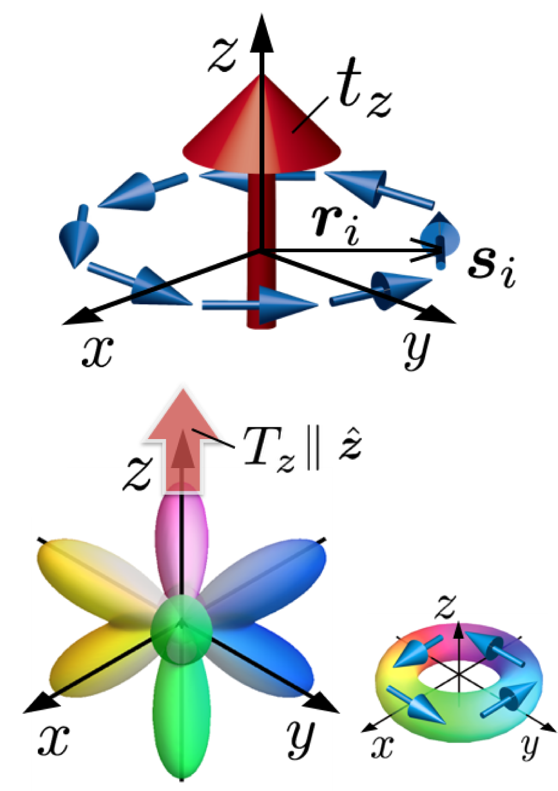
固体中の電子が示す電荷・スピン・軌道自由度間の競合は，異方的な電荷・磁荷分布を生み出し，磁性や超伝導をはじめとする多彩な電子相の微視的な起源になります． 最近では4つの多極子(電気多極子，磁気多極子，電気トロイダル多極子，磁気トロイダル多極子)を導入することにより，これらの複雑な電子自由度が競合した状況を系統的に捉えることができるようになってきました． 一方，これらの多極子を伴う秩序状態がどのような状況で安定に存在するかに関してはまだまだ未解明な点が数多く残されています． 例えば，時間・空間反転対称性の破れた系で実現する，奇パリティ多極子の一つである「磁気トロイダル双極子」の秩序状態は，電気磁気効果などの交差相関現象の源になるため近年注目を集めていますが，一方，これらトロイダル多極子が原子サイトにおいてどのように活性化し，電気磁気効果をはじめとする交差相関現象にどのようにして寄与するのか，などに関する微視的な理解は得られていませんでした．
そこで本研究では，複数の異なるパリティをもつd-f軌道系に対して，空間反転対称性の破れに伴って現れる奇パリティ結晶場の影響を考えた際の，原子サイトにおける磁気トロイダル多極子の微視的な活性化条件および，その秩序状態が電気磁気効果に与える影響をモデル計算によって調べました．
その結果，奇パリティ結晶場のもとでd-f混成軌道が生じることで，原子サイトにおける磁気トロイダル双極子が活性になり，軌道間相互作用によってその秩序状態が安定化しうることを明らかにしました．
さらに，こうした軌道混成由来の磁気トロイダル双極子がもたらす電気磁気効果の詳細な解析を行いました．
M. Yatsushiro and S. Hayami, J. Phys. Soc. Jpn. 88, 054708 (2019)